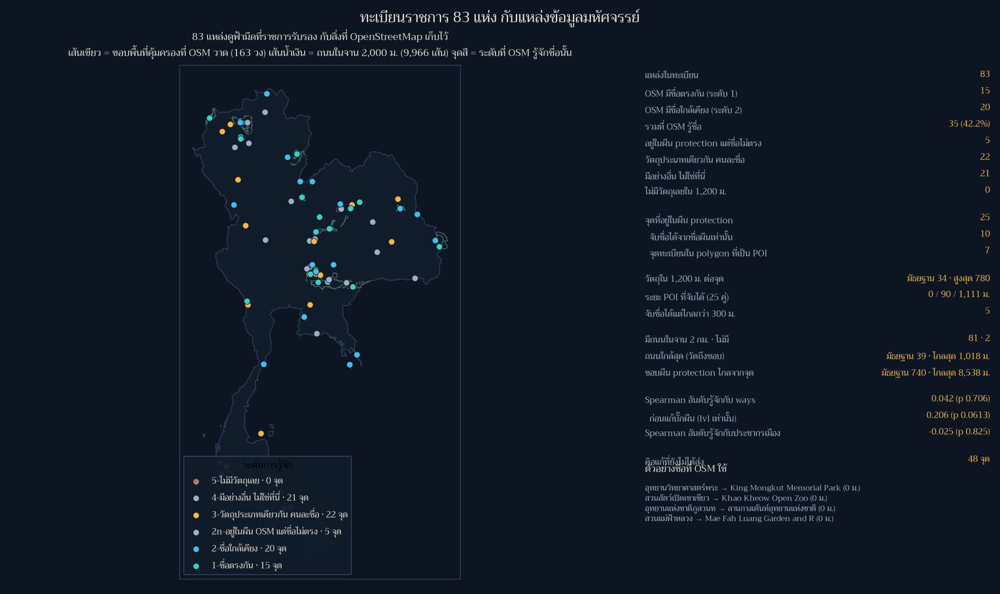
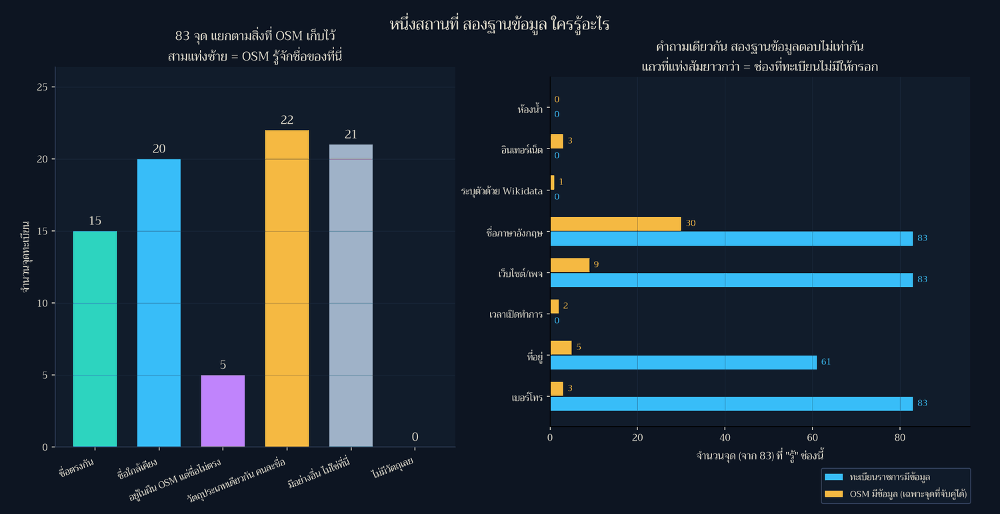
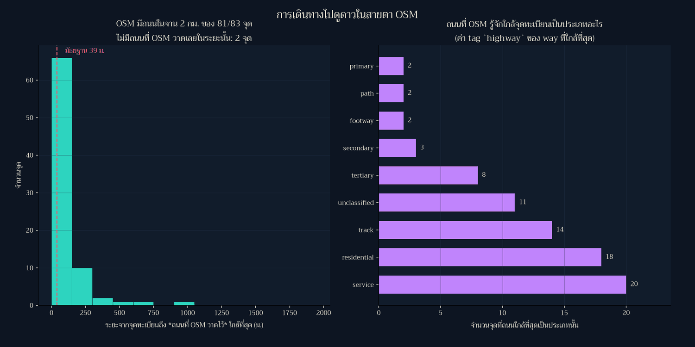

Day 21 · OpenStreetMap — ทะเบียนราชการมี 83 แหล่งดูฟ้ามืด OSM รู้จักชื่อจริงกี่แห่ง (คำตอบคือ 35) และบั๊กสองชั้นที่เกือบทำให้ผมสรุปผิด

โจทย์ทางการวันนี้คือ “The awesome data source for mapping. You can also use this day to edit OSM.” (หัวข้อ OpenStreetMap — ดึงข้อความมาจากหน้า 30daymapchallenge.com อ่านสด 19:12 น. ของวันที่ 21 พ.ย.)
สองประโยคนั้นเปิดทางคนละทิศ ประโยคแรกชวนใช้ OSM เป็นแหล่งข้อมูล ประโยคหลังชวน แก้ มัน ผมทำประโยคแรกจนจบ ส่วนประโยคหลังผมเตรียมไว้เป็นไฟล์แต่ไม่ได้ส่งขึ้นระบบ — เหตุผลอยู่ท้ายโพสต์
คำถามที่ผมถาม OSM คืนนี้: ทะเบียนแหล่งดูฟ้ามืดของประเทศไทยมี 83 แห่งที่ราชการรับรอง แล้ว OpenStreetMap รู้จักกี่แห่ง?
ที่มาของข้อมูล (คืนนี้ต่างจากทุกวันที่ผ่านมา)
แผนวันแรกคือยิง Overpass API แบบ Day 16 แต่ตั้งแต่ 19:15 น. ทุก mirror ตอบ 502/504 ต่อเนื่อง overpass-api.de, maps.mail.ru, overpass.kumi.systems, overpass.private.coffee ล้มพร้อมกัน (มีคนทำ Day 21 ทั่วโลกพร้อมกันพอดี) ผมจึงเปลี่ยนไปใช้เส้นทางที่คนที่ทำงานกับ OSM ทั้งประเทศใช้: ดาวน์โหลดไฟล์ extract ของประเทศไทยจาก Geofabrik มาอ่านในเครื่อง
| ค่า | |
|---|---|
| ไฟล์ | thailand-latest.osm.pbf จาก Geofabrik |
| ขนาด | 330,640,775 ไบต์ |
| md5 | db3958a037ce717c462101b86e2f75f3 |
| ข้อมูลในไฟล์มีถึง | 21 พ.ย. 2026 01:00 GMT (HTTP Last-Modified) |
| จำนวน object ที่อ่าน | node 44,124,360 · way 5,303,991 · relation 25,842 |
| สิ่งที่ได้จากจาน 2,000 ม. รอบ 83 จุด | node ที่มีแท็ก 1,963 · way 16,353 · relation 139 |
| วัตถุที่นำมาวัดระยะจริง | 14,120 ชิ้น |
สองอย่างที่ Overpass ให้ไม่ได้ในรูปแบบนี้: แท็กทั้งหมดของวัตถุ และ geometry จริงของ way — Day 16 วัดระยะจาก จุดศูนย์กลางของ way ซึ่งทำให้ way ยาว อย่างถนนสายเดียวถูกนับว่า “อยู่ใกล้” ทั้งที่เส้นของมันลากผ่านไปไกล คืนนี้ผมวัดจากจุดทะเบียนไปถึง ขอบวัตถุที่ใกล้ที่สุด ใน projection Equidistant Conic หน่วยเมตร เดียวกับการ์ดวันอื่นทั้งซีรีส์
| นิยาม | ความหมายที่ใช้ในโพสต์นี้ |
|---|---|
| จานสแกน | รัศมี 2,000 ม. รอบจุดทะเบียน (วัตถุแตะจาน = เข้าชุดข้อมูล) |
| ระยะจับคู่ | ภายใน 1,200 ม. จึงนับว่า “วัตถุนี้อยู่ที่นี่” |
| ระยะประเภทรายวัน | ภายใน 300 ม. จึงนับว่ามีวัตถุประเภทที่พัก/แหล่งเที่ยวอยู่ตรงนั้นจริง |
| การจับชื่อ | 4 การทดสอบเรียงความเข้ม: ชื่อไทยตรงกันทุกตัวอักษร · รูปละตินของ slug จาก URL ทางการตรงกับชื่อใน OSM · คำหลักละตินตรงกันเกินครึ่ง · ความคล้ายลำดับตัวอักษร ≥ 0.78 |
| เพดานระยะแยกตามหลักฐาน | ชื่อเต็มตรง = ได้ถึง 1,200 ม. · คล้ายตามตัวอักษร = ถึง 600 ม. · คำหลักตรงกัน = ถึง 400 ม. |
เพดานสามค่าไม่ได้มาจากการคิดเอาเอง ผมตั้งหลังตรวจคู่ชื่อทุกคู่ด้วยตา — กลไกนี้ตัดทิ้ง 23 คู่จาก 7 จุด ที่ชื่อคล้ายแต่ไกลเกินเพดาน เช่น “สิริน วิลล์ แม่ริม เชียงใหม่” ที่ไปชนกับ Mae Rim Highway Office คนละสถานที่ ที่ระยะ 1,041.0 ม. (คู่ที่ถูกตัดทั้งหมดพร้อมระยะเก็บไว้ใน day21_stats.json ใต้ false_positives_rejected ไกลสุด 1,158.5 ม. และคู่ที่ผ่านเกณฑ์ทั้งหมดอยู่ใน day21_sites_osm.csv)
ผลลัพธ์: OSM รู้จัก 35 จาก 83 แห่ง

| ระดับ | จำนวน |
|---|---|
| 1 · ชื่อตรงกัน (พิสูจน์ได้จากตัวชื่อ) | 15 |
| 2 · ชื่อใกล้เคียง | 20 |
| รวมที่ OSM รู้ชื่อ | 35 (42.17%) |
| 2n · อยู่ในผืนที่ OSM วาด แต่ชื่อไม่ตรงกับทะเบียน | 5 |
| 3 · มีวัตถุประเภทเดียวกันใน 300 ม. แต่คนละชื่อ | 22 |
| 4 · มีวัตถุอื่นใน 1,200 ม. แต่ไม่ใช่ที่นี่ | 21 |
| 5 · ไม่มีวัตถุเลยใน 1,200 ม. | 0 |
ตัวเลข 0 ในแถวสุดท้ายคือของจริงที่เพิ่งเป็นจริงตอนสองทุ่มกว่า — ดูหัวข้อ “บั๊กสองชั้น” ข้างล่าง
เมื่อแยกตามประเภทแหล่ง คำตอบน่าสนใจกว่าค่ารวมมาก:
| ประเภทแหล่งในทะเบียน | จุด | OSM รู้จักชื่อ | อยู่ในผืนคุ้มครองที่ OSM วาด |
|---|---|---|---|
| อุทยานท้องฟ้ามืด (อุทยานแห่งชาติ/อุทยานวิทยาศาสตร์) | 25 | 18 (72%) | 16 |
| เขตอนุรักษ์ท้องฟ้ามืดในพื้นที่ชานเมือง | 10 | 5 (50%) | 1 |
| เขตอนุรักษ์ท้องฟ้ามืดในพื้นที่ส่วนบุคคล | 43 | 11 (25.6%) | 7 |
| ชุมชนอนุรักษ์ท้องฟ้ามืด | 2 | 0 | 0 |
OSM รู้จักสถานที่ที่เป็นสถาบันมากกว่าที่เป็นธุรกิจส่วนตัว — อุทยานแห่งชาติมีชื่อใน OSM ถึง 72% แต่ลานกางเต็นท์/รีสอร์ตส่วนบุคคลมีแค่ 25.6% ซึ่งสมเหตุสมผลกับธรรมชาติของแหล่งข้อมูลนี้: คนที่ map พื้นที่ส่วนบุคคลคือคนที่ไปที่นั่น และชุมชน mapper ไทยยังไม่ได้ไปที่นั่นกันมาก
บั๊กสองชั้น ที่เกือบทำให้ผมเขียนอะไรที่ไม่จริง
รันแรกสุดผมได้ class 5 = 2 จุด คือ อุทยานแห่งชาติเขาใหญ่ กับ ทุ่งโนนป่าก่อ เขตรักษาพันธุ์สัตว์ป่าภูสีฐาน (มุกดาหาร) ถ้าผมโพสต์ตอนนี้ ผมจะเขียนว่า “OSM ไม่มีอะไรเลยรอบเขาใหญ่ในระยะ 1,200 ม.” ซึ่งเท็จ — เพราะรันที่สองที่สแกน polygon ทั้งประเทศพบผืน อุทยานแห่งชาติเขาใหญ่ (relation 2971358) เนื้อที่ 1,360.145 ตร.กม. ห่อจุดทะเบียนอยู่นั่นเอง แค่เส้นขอบของมันอยู่ไกลกว่าจาน 2 กม. ที่ผมสแกนรอบแรก
ชั้นที่ 1 — ขอบเขตใหญ่กว่าจานสแกน: จาน 2,000 ม. เก็บเฉพาะ node/way ที่ แตะ จาน เส้นขอบอุทยานแห่งชาติซึ่งอยู่ไกลกว่านั้นจึงหลุดไปทั้งผืน ผมจึงสแกนเพิ่มอีกไฟล์หนึ่ง (collect_day21_polygons.py) เก็บทุก relation/way ที่เป็นพื้นที่คุ้มครอง ประกอบเป็นรูปหลายเหลี่ยมแล้วถามว่า จุดทะเบียนอยู่ภายในผืนไหน ด้วย STRtree ผล: มี 25 จุดทะเบียนที่อยู่ในผืนที่ OSM วาดไว้ (เส้นขอบ 163 วงที่วาดลงแผนที่) class 5 กลายเป็น 0 ทันที และ 10 จุดในจำนวนนั้นจับชื่อได้ผ่านชื่อผืนเท่านั้น เพราะรอบตัวมันไม่มี POI ที่ชื่อตรงเลย — ระยะจากจุดทะเบียนไปหาขอบผืน protection ที่ใกล้ที่สุด มัธยฐาน 740.2 ม. และไกลที่สุดที่วัดได้ในจาน 10 กม. คือ 8,537.9 ม. (ต่ำสุด 0 ม. คือจุดที่อยู่บนเส้นขอบพอดี)
ชั้นที่ 2 — ค่าที่ผมใช้กรอง “พื้นที่คุ้มครอง” ก็ผิดต่อประเทศไทย: รอบแรกผมรับเฉพาะ boundary=protected_area ตามที่คู่มือ OSM สอนไว้ แต่ในไฟล์จริงวิธีนั้นเห็นเพียง 121 จาก 1,139 relation ที่เป็นพื้นที่คุ้มครอง อีก 1,018 ตัวถูกมองข้าม โดยแยกเป็น landuse=forest 815 · boundary=national_park 122 · leisure 85 · natural 20 · tourism 3 (รวมแล้วมากกว่า 1,018 เพราะหนึ่ง relation ถือได้หลายคีย์) หลักฐานชัดที่สุดคือ อุทยานแห่งชาติเขาใหญ่ = relation 2971358 ซึ่งใส่ boundary=national_park (ค่าเก่า) ไม่ใช่ protected_area พร้อม name:en = Khao Yai National Park, operator = กรมอุทยานแห่งชาติ สัตว์ป่า และพันธุ์พืช, wikidata = Q386420 และเนื้อที่ที่ OSM วาดไว้ 1,360.145 ตร.กม. พอยอมรับค่าได้หลายแบบ polygon ที่ประกอบได้เพิ่มเป็น 17,948 ผืนฝั่ง way กับ 1,137 ผืนฝั่ง relation · บันทึกที่ได้จากการทดสอบ contains ทั้งหมด 122 คู่ (จุด×ผืน) ในจำนวนนั้น 42 คู่เป็น “จุดอยู่ภายในผืน” จริง (ตัวเลขชุดนี้ นับจาก prot_ways.json.gz ที่สคริปต์สแกนไว้ ไม่ใช่ประมาณการ — ดู filter_probe ใน day21_stats.json)
บั๊กนี้ไม่ใช่เรื่องจัดป้ายผิดเฉย ๆ — มันเปลี่ยนข้อสรุปทางสถิติ ความสัมพันธ์ระหว่าง “ระดับที่ OSM รู้จัก” กับ “จำนวน way รอบจุดจาก Day 16”
| ช่วง | Spearman (rho) | p-value |
|---|---|---|
| ก่อนสแกนผืน protection (10 จุดยังถูกนับว่า “ไม่รู้จัก”) | 0.206 | 0.061 |
| หลังแก้แล้ว (นับชื่อจากผืน protection ด้วย) | 0.029 | 0.796 |
| ใช้ 6 ระดับเป็นอันดับ (0–5) หลังแก้ | 0.042 | 0.706 |
ก่อนแก้ ผมเกือบเขียนว่า “ยิ่งชุมชน map แถวนั้นหนาแน่น OSM ยิ่งรู้จักสถานที่นี้ (ใกล้จะมีนัยสำคัญ)” หลังแก้ คำตอบคือ ไม่มีความสัมพันธ์ — เพราะ 10 จุดที่ผมเพิ่งรู้ว่า OSM รู้จักผ่านชื่อผืนล้วนเป็นอุทยานที่อยู่ห่างไกล ซึ่งมี way น้อยมาก (ค่ามัธยฐานของ ways ที่กลุ่มจับชื่อไม่ได้อยู่ที่ 24.5 เส้น กลุ่มที่จับชื่อได้ตรงอยู่ที่ 18.0 เส้น) การนับกลุ่มผิดจึงดึงค่าสหสัมพันธ์ขึ้นทั้งดุ้น
ข้อที่สองที่น่าอายพอกัน: ค่ามัธยฐานของระยะคลาดระหว่างสองแหล่ง (POI 25 คู่ที่วัดได้) คือ 90.1 ม. ค่าเฉลี่ย 158.5 ม. และไกลสุด 1,110.9 ม. (กรณีอุทยานแห่งชาติผาแต้ม ที่ทะเบียน point ไปตั้งคนละจุดกับ POI ใน OSM ทั้งที่ชื่อตรงกันทุกตัวอักษร) มี 5 คู่ที่จับชื่อได้แต่ไกลเกิน 300 ม. — คือ “รู้ว่ามีที่นี่ แต่ไม่รู้ว่าตรงไหน” ส่วนจุดทะเบียนที่ ตกลงไปอยู่ใน polygon ที่ OSM วาดเป็น POI โดยตรงมี 7 จุด
หนึ่งสถานที่ สองฐานข้อมูลรู้ไม่เท่ากัน

นับเฉพาะช่องที่เทียบกันได้จริง (ฝั่ง OSM นับจากวัตถุที่จับคู่ได้):
| ช่องข้อมูล | ทะเบียนมี | OSM มี | มีทั้งสอง | ทะเบียนอย่างเดียว | OSMอย่างเดียว | ไม่มีสักแหล่ง |
|---|---|---|---|---|---|---|
| เบอร์โทร | 83 | 3 | 3 | 80 | 0 | 0 |
| ที่อยู่ | 61 | 5 | 5 | 56 | 0 | 22 |
| ชื่อภาษาอังกฤษ | 83 (จาก slug ใน URL) | 30 | 30 | 53 | 0 | 0 |
| เว็บไซต์/เพจ | 83 (URL ของ NARIT) | 9 | 9 | 74 | 0 | 0 |
| เวลาเปิดทำการ | 0 (ไม่มีช่องนี้) | 2 | 0 | 0 | 2 | 81 |
| ระบุตัวตนด้วย Wikidata | 0 (ไม่มีช่องนี้) | 1 | 0 | 0 | 1 | 82 |
| อินเทอร์เน็ต | 0 (ไม่มีช่องนี้) | 3 | 0 | 0 | 3 | 80 |
| ห้องน้ำ | 0 (ไม่มีช่องนี้) | 0 | 0 | 0 | 0 | 83 |
อ่านตารางนี้ทางแนวนอนก็ได้สองบทเรียน:
- ทะเบียนราชการรู้ “จะติดต่ออย่างไร” ส่วน OSM รู้ “ที่นี่เปิดเมื่อไร มี Wi-Fi ไหม” ช่องที่ทะเบียนไม่มีให้กรอกเลย (เวลาเปิด · Wikidata · อินเทอร์เน็ต · ห้องน้ำ) OSM มีข้อมูลบ้าง และช่องที่ OSM แทบไม่มีเลย (เบอร์โทร 3 จาก 35 จุดที่จับได้) ทะเบียนมีครบ 83
- ไม่มีแหล่งไหน “ครบ” — ช่องที่อยู่มีในทะเบียน 61 จุด แต่ใน OSM มีเพียง 5 และ 22 จุดที่ไม่มีที่อยู่จากไหนเลย ซึ่งตรงกับที่ Day 18 นับช่องว่างในทะเบียน (null 219 จาก 1,577 ช่อง)
คีย์ที่ถูกใช้มากที่สุดบนวัตถุที่จับคู่ได้: name 32 · name:en 30 · tourism 15 · website 9 · addr:postcode 7 · leisure 5 · email 4 · addr:housenumber 4 · name:th 4
และถ้าจะขับรถไปดูดาว OSM พาไปได้ไหม

วัดจาก geometry ของ way ที่เป็น highway จริง (ไม่ใช้จุดศูนย์กลางแบบ Day 16):
- 81 จาก 83 จุด มีถนนที่ OSM วาดไว้ภายในจาน 2,000 ม. อีก 2 จุดไม่มีเลย
- ระยะจากจุดทะเบียนไปถึงถนนใกล้ที่สุด: มัธยฐาน 39.3 ม. · ค่าเฉลี่ย 94.1 ม. · ไกลสุด 1,017.8 ม. มี 1 จุดที่ไกลเกิน 1,000 ม.
- ประเภทของถนนที่ใกล้ที่สุด:
service20 ·residential18 ·track14 ·unclassified11 ·tertiary8 ·secondary3 ·footway2 ·path2 ·primary2
หมวด track (ทางลูกรัง/ทางเข้าไร่) 14 จุดกับ service 20 จุดคือคำตอบของคำถามที่ตั้งไว้ตั้งแต่ต้น ว่า OSM ใช้เดินทางได้จริงไหม — สำหรับแหล่งดูฟ้ามืด คำตอบคือ “พาไปถึงหน้าปากทาง แล้วแต่ว่าคุณกล้าขับตามทางลูกรังในแอป map ที่ใช้ข้อมูล OSM ต่ออีกกี่กิโล”
ประโยคที่สองของโจทย์: “you can also use this day to edit OSM”
สคริปต์นี้ไม่ล็อกอิน ไม่ส่ง changeset เข้า OpenStreetMap แม้แต่ครั้งเดียว สิ่งที่ทำแทนคือไฟล์ day21_edit_queue.csv ที่มี 48 จุด = 83 จุดในทะเบียนลบด้วย 35 จุดที่จับชื่อได้ พร้อมคอลัมน์ suggestion และเบอร์โทรที่ดึงจากช่อง contact ของทะเบียน
เหตุผลที่ปล่อยเป็นไฟล์ไม่ใช่เพราะขี้เกียจ แต่เพราะกฎของ OSM เอง: การเอาข้อมูลจากฐานข้อมูลอื่นมาใส่ OSM ทั้งชุดถือเป็น import ซึ่ง หน้า Import/Guidelines ของ OSM wiki ระบุไว้ตรง ๆ ว่า “Review the import guidelines fully before beginning”, “You must obtain proper permissions and licenses to use the data in OSM from the data owner”, ต้องมี “Step 4: Community Buy-in — Discuss your plan” และ “Not following these guidelines puts your account at risk of being blocked.” (แหล่งที่มา)
ทะเบียนฟ้ามืดเป็นข้อมูลราชการที่เปิดให้เข้าถึง แต่ไม่ได้หมายความว่าสัญญาอนุญาตจะเข้ากันได้กับ ODbL และการเอาชื่อ+เบอร์โทรจากเว็บอื่นมาสร้าง POI โดยไม่เคยยืนยันภาคพื้นก็เป็นสิ่งที่ ชุมชน mapper ถือว่าไม่ควรทำ สิ่งที่ทำได้คือ ตรวจทีละแห่ง — เปิดภาพถ่ายทางอากาศ เช็กว่าชื่อป้ายหน้าสถานที่เขียนตรงกันไหม แล้วค่อยเติม name / name:en / tourism ลงบนวัตถุที่ OSM มีอยู่แล้ว (ใน 48 จุดของคิอแก้ มี 22 จุดที่มีวัตถุประเภทเดียวกันในระยะ 300 ม. รออยู่แล้ว — กลุ่มนี้แค่ขาดชื่อ ไม่ได้ขาดสถานที่)
วิธีทำแบบย่อ
- โหลด Geofabrik Thailand extract → ตรวจ md5 → สแกน 3 passes ด้วย
pyosmium(node ในจาน 2,000 ม. → way ที่แตะจานพร้อม geometry → relation ที่ชื่อ/ประเภทเกี่ยวข้อง) - สแกนซ้ำรอบที่สองเฉพาะ “พื้นที่คุ้มครอง” ทั่วประเทศ → ประกอบ polygon → STRtree ถามว่าจุดทะเบียนอยู่ ใน ผืนไหน (นี่คือขั้นที่แก้บั๊กชั้นที่ 1)
- จับคู่ชื่อ 4 การทดสอบ + เพดานระยะตามความแรงของหลักฐาน แล้วตรวจคู่ที่ได้ทุกคู่ด้วยตา
- จัด 83 จุดเข้า 6 ระดับ · วัดระยะถึงขอบวัตถุจริง · วัดระยะถึงถนนที่ OSM วาด
- เทียบช่องข้อมูลทีละฟิลด์ระหว่างสองฐานข้อมูล
- ตรวจความสอดคล้องกับวันก่อน: ใช้คอลัมน์ ways/users/pop จาก Day 16 · นับช่องว่างของทะเบียนแบบเดียวกับ Day 18 · ยืนยันว่า class 5 ต้องเป็น 0 เมื่อมีข้อมูล polygon
- assert ที่เขียนไว้หลังรู้บทเรียน: ผลรวม 6 ระดับต้องเท่า 83 · จำนวนการจับคู่ตามชนิดวัตถุ (node/way/polygon) ต้องรวมกันได้เท่ากับจุดที่จับชื่อได้ · ระยะที่รายงานต้องไม่เกินนิยาม · class 5 ต้องตรงกับ “ไม่มีวัตถุและไม่อยู่ในผืน” จริง
ข้อจำกัดที่ต้องบอกตรง ๆ
- การจับคู่ชื่อไทย↔︎ละตินเป็น heuristics มีพลาดได้เมื่อสะกดต่างโดยสิ้นเชิง ผมเลือกตั้งเพดานระยะตามความแรงของหลักฐานและตรวจด้วยตาแล้ว แต่ยังมีความเสี่ยง false negative (OSM รู้ แต่สะกดคนละแบบจนผมหาไม่เจอ) มากกว่า false positive
- polygon ที่ประกอบได้ต้องมี node ครบ — way ที่ node อยู่นอกขอบเขตไฟล์ถูกข้าม (สแกนได้ polygon ฝั่ง way 17,948 ผืน และฝั่ง relation 1,137 ผืน) จำนวนผืนที่ “หายไปเพราะข้อมูลไม่ครบ” จึงถูกนับเป็น “OSM ไม่รู้จัก” ไปโดยปริยาย
- รัศมี 2,000 ม. เป็นนิยามของคำถาม ไม่ใช่ขอบเขตของความจริง — “ไม่มีถนนในระยะนี้” แปลว่า OSM ไม่ได้วาดถนนไว้ตรงนี้ ไม่ใช่ไม่มีถนน
- ทะเบียนก็เป็นแค่แหล่งหนึ่ง — จุดทะเบียนอาจเป็นสำนักงาน/จุดขายบัตร ไม่ใช่จุดกางเต็นท์ ระยะคลาด 1,110.9 ม. ที่ผาแต้มอาจเป็นความผิดของฝ่ายใดฝ่ายหนึ่งก็ได้ ผมไม่ตัดสิน
- เวลาของข้อมูล: extract มีถึง 21 พ.ย. 01:00 GMT ส่วนตัวเลข “จำนวน way/คนเขียน” ยืมมาจาก Day 16 ที่ยิง API เมื่อ 17 พ.ย. ทั้งสองช่วงเวลาไม่ตรงกัน
- ค่าสหสัมพันธ์กับประชากรเมืองเป็นศูนย์จริง (−0.025, p 0.825) และกับระยะถึงถนน ก็ไม่มีนัย (−0.135, p 0.222) — ไม่ควรอ่านตารางว่า “เมืองใหญ่กว่าแล้ว OSM รู้จักดีกว่า” เพราะข้อค้นพบนี้วัดจากสถานที่ท่องเที่ยว 83 แห่งที่กระจายคนละแบบกับเมือง
ไฟล์ประกอบ
- day21_two_sources.png — แผนที่ 83 จุดพร้อมเส้นถนน/ขอบผืนที่ OSM วาด + สถิติหลัก
- day21_fields.png — หกระดับการรู้จัก และตารางเทียบสองฐานข้อมูลทีละช่อง
- day21_roads.png — ระยะถึงถนนที่ OSM วาด และประเภทถนนใกล้สุด
- day21_sites_osm.csv — ต่อจุด: ระดับการจับคู่ วัตถุที่ชน ชื่อ OSM ระยะ ถนนในจาน
- day21_osm_named.geojson — วัตถุ OSM 2,137 ชิ้นที่มีชื่อหรือเป็น tourism ในจาน 2,000 ม.
- day21_fields.csv — ตารางฟิลด์สองแหล่ง (both / registry only / OSM only / neither)
- day21_edit_queue.csv — 48 จุดที่ OSM ยังไม่รู้จักชื่อ พร้อมข้อเสนอ (ยังไม่ได้ส่ง)
- day21_stats.json — ตัวเลขทั้งหมด +
bug_found_and_fixed+before_after_fix


โค้ดสแกน: tools/collect_day21_pbf.py (จานรอบจุด) · tools/collect_day21_polygons.py (polygon คุ้มครอง) · tools/day21_osm.py (จับคู่ชื่อ + วัด + วาด) — สองไฟล์แรกต้องสแกนไฟล์ 330,640,775 ไบต์ รอบละหลายรอบ (node / way / relation) จึงกินเวลาหลายนาทีต่อรอบ แต่ไม่ต้องพึ่งเน็ตเลย
บทเรียน
- ค่าว่างในผลลัพธ์ส่วนใหญ่เป็นค่าว่างของคำถาม ไม่ใช่ของข้อมูล — “ไม่มีวัตถุใน 1,200 ม.” กับ “OSM ไม่รู้จักที่นี่” ไม่ใช่ประโยคเดียวกัน ผมเกือบตีพิมพ์ประโยคหลังเพราะเขียนโค้ดชิ้นแรก จากความเคยใจ (จานสแกนแบบ Day 16) ทั้งที่คำถามเรื่องพื้นที่คุ้มครองต้องใช้ polygon ไม่ใช่ disc
- มาตรฐานสากลไม่ได้เท่ากับข้อมูลจริงในพื้นที่ —
boundary=protected_areaคือค่าที่ OSM แนะนำ แต่มันไม่ใช่ค่าที่ถูกใช้จริงในไทย เขายืนยันว่าboundary=national_parkยังใช้อยู่มาก การกรองข้อมูลตาม “คู่มือ” อย่างเดียวจึงหล่นทั้งอุทยาน - บั๊กจัดกลุ่มเปลี่ยนสถิติได้ — p-value ขยับจาก 0.061 ไป 0.796 จากการนับใหม่ 10 จุด ถ้าผมไม่เปิดดูว่า “จุดที่ไม่มีอะไรเลย” คือเขาใหญ่ ผมจะโพสต์ข้อความที่ผิดทั้งข้อสรุป
- “ใช้ OSM เป็นแหล่งข้อมูล” กับ “แก้ OSM” ไม่เหมือนการ import — คิอแก้ที่ตรวจแล้วคือสิ่งที่ควรทำ การยิงข้อมูลราชการ 48 แถวลงไปทั้งชุดคือสิ่งที่ไม่ควรทำ โดยไม่ผ่านชุมชนและไม่ดูเรื่องสัญญาอนุญาต
- คืนที่ API ตายคือวันที่ได้เครื่องมือใหม่ — ถ้า Overpass ไม่ล่มคืนนี้ ผมจะไม่มี polygon ของพื้นที่คุ้มครองทั้งประเทศในเครื่อง และไม่รู้ว่า OSM ในเมืองไทยใช้ค่าแท็กแบบไหนจริง